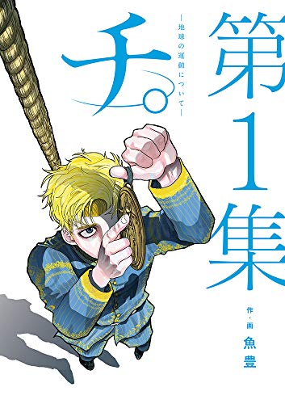
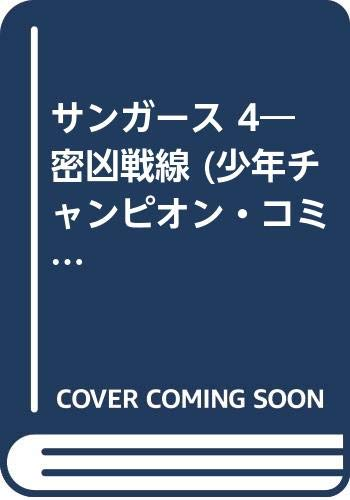

Anime
アニメ

チ。 ―地球の運動について―
15世紀ヨーロッパ。地動説を唱えることが重罪とされた時代に、真理を追い求める人間たちの信念と生き様を描く。謎の学者フベルトの言葉で地動説の可能性を知った神童ラファウから始まる、命を賭した知の継承の物語。
公式サイト
ワンパンマン
あらゆる敵をパンチ一発で倒してしまう最強のヒーロー・サイタマ。圧倒的な強さゆえの虚無感と、それでもヒーローであり続ける日常を描くギャグ系アクション。強さとは何か、ヒーローとは何かを問い直す。
公式サイト葬送のフリーレン
魔王を倒した勇者一行の魔法使い・フリーレン。千年以上を生きるエルフである彼女は、勇者ヒンメルの死をきっかけに「人を知る旅」に出る。過ぎ去った時間の重みと、残された者の想いを静かに描くファンタジー。
公式サイト

グラップラー刃牙
地下闘技場の最年少チャンピオン・範馬刃牙と、地上最強の生物と謳われる父・範馬勇次郎。あらゆる格闘技と格闘家が交錯する、極限の闘いの世界。強さへの純粋な渇望が描き出す長編格闘ドラマ。
公式サイト